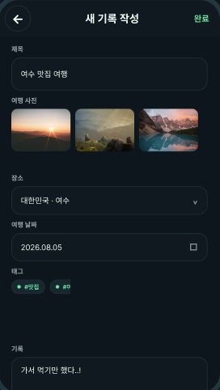
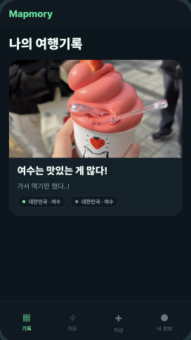

여행을 지도에 남겨보세요
Mapmory와 함께라면 당신의 모든 여행이 지도가 됩니다.
다녀온 지역을 하나씩 채워보세요.

지역을 선택하고
여행을 기록해요
국가와 행정구역을 선택하고, 그곳에서의
특별한 추억을 기록으로 남길 수 있습니다.
장소날짜이야기

사진은 나중에
추가해도 괜찮아요
꼭 사진이 없어도 괜찮습니다. 당신의 진솔한 기록만으로도
충분히 소중한 지도가 완성됩니다.